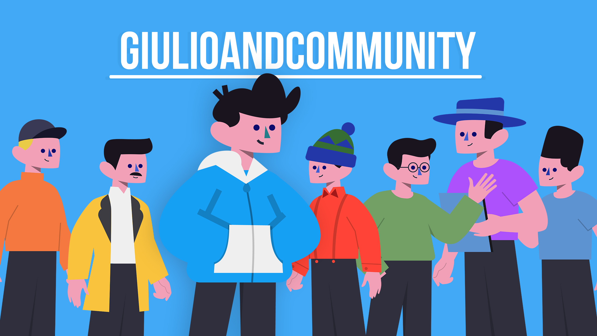

Ciao io sono Giulio, ho 17 anni e sono un ragazzo appassionato al mondo della programmazione.
Sono un tipo molto riservato, e poco socievole, a cui non piace troppo uscire dalla propria confort zone. A volte però, ignorando ansie e paure, cerco di abbattere queste insicurezze e sfruttare al massimo tutto il tempo che ho.
Frequento un istituto tecnico informatico, ma tutto ciò che conosco lo ho imparato a casa nella mia cameretta.
Da qualche anno mi sono anche buttato in una nuova avventura nel mondo di YouTube dove parlo di programmazione e informatica, ma mi diverto anche con tanto intrattenimento e cose un po' più personali. Spero che un giorno tutto questo si trasformi in altro, oltre ad una grande passione.
Nel frattempo mi diverto, cerco di fare del mio meglio, pensando però sempre al mio futuro
I miei social
Istituto Tecnico Tecnologico - Indirizzo Informatico
ITTS Rimini O. Belluzzi L. Da Vinci
Quarto anno in corso...
Data di Diploma prevista: Giugno 2023
Materie di indirizzo
- Informatica
Programmazione OOP, Linguaggio C#
- SIR (Sistemi e Reti)
Linguaggi HTML, Css, Javascript, Struttura e creazione di una rete
- TPSIT (Tecnologie e progettazione di sistemi informatici)
Linguaggio C, Progettazione e documentazione del software
- Telecomunicazioni
Teoria, progettazione e realizzazione di semplici circuiti elettronici
Programmazione OOP, Linguaggio C#
- SIR (Sistemi e Reti)
Linguaggi HTML, Css, Javascript, Struttura e creazione di una rete
- TPSIT (Tecnologie e progettazione di sistemi informatici)
Linguaggio C, Progettazione e documentazione del software
- Telecomunicazioni
Teoria, progettazione e realizzazione di semplici circuiti elettronici
Lingue
Italiano- Madrelingua
Inglese- Base/Intermedio (Livello A2)
Francese- Base
La scuola mi ha solamente dato, e mi sta dando, una piccola base delle mie competenze, per questo cerco di imparare giorno per giorno in camera mia nuove cose da autodidatta
Compentenze generali
Utilizzo di posta elettronica
Software Adobe
Software Suite Office
Editing video
Computer Hardware, Sistemi operativi
Compentenze di programmazione
HTML
CSS
JavaScript/Node.js
C
C#
Contenuti su YouTube
Qualche anno fa decisi un po' per noia, un po' per
mettermi in gioco e un po' per realizzare un mio
piccolo sogno, di iniziare a creare contenuti su
YouTube. Realizzo tutt'ora video riguardanti i
mondo della programmazione e
dell'intrattenimento, cosa che amo fare.
Con il tempo sono cresciuto, nel mio piccolo, e
migliorato molto. Cerco ogni giorno di maturare
sempre di più, sia dal lato dei contenuti che dal
lato personale
